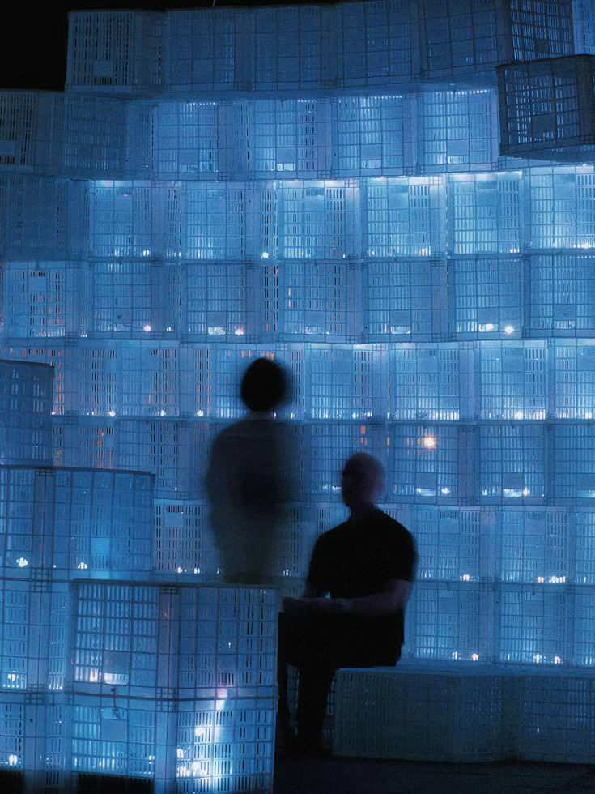

主動解決問題
面對挑戰，我習慣先釐清問題、分析原因， 再拆解成可執行的步驟。不等待問題擴大， 而是主動尋找解法，持續優化流程， 讓每一次挑戰都成為改善的契機。
融合叛客前衛美學與直覺化流暢體驗，將抽象的品牌基因轉化為高辨識度的未來感視覺語言。
從概念解構、介面系統精雕到跨平台動態整合，每一處細節皆為打破常規而生。
好的成果，來自正確的態度、持續的精進，以及彼此成就的團隊。
面對挑戰，我習慣先釐清問題、分析原因， 再拆解成可執行的步驟。不等待問題擴大， 而是主動尋找解法，持續優化流程， 讓每一次挑戰都成為改善的契機。
保持好奇心，積極接觸新技術與新工具， 並將所學實際應用於工作與專案。 我相信專業沒有終點，唯有持續學習、 勇於嘗試與定期反思，才能不斷突破自己。
尊重不同觀點，主動溝通需求與進度， 讓資訊透明、目標一致。 我重視團隊中的互相支持與經驗分享， 相信良好的合作能讓個人能力轉化為更大的成果。
將創意寫進程式
讓想法成為作品
PROFILE / 06
我是一位熱愛程式開發的網頁開發者， 對前端技術、互動設計與使用者體驗充滿熱情。 喜歡透過 HTML、CSS、JavaScript 等技術， 將創意與想法轉化為實際的網頁作品， 並在每一次開發過程中累積經驗、提升專業能力。
我相信優秀的作品不只是畫面美觀、功能完整， 更需要兼顧操作流暢度、資訊易讀性與不同裝置的使用體驗。 因此，我重視網頁排版、程式碼品質與細節設計， 期望透過持續優化，打造兼具美感與實用性的數位產品。
目前持續累積個人網頁作品與專案實作經驗， 精進響應式網頁設計（RWD）、Bootstrap 版面配置、 JavaScript 互動效果與問題排除能力。 未來也希望接觸更多開發工具與技術， 持續突破自我，讓每一份作品都展現更成熟的實力。
CODE / DESIGN / CREATE
從前端切版到後端資料處理，透過四項練習作品， 記錄每一次實作、解決問題與持續成長的過程。
整合個人介紹、作品展示與聯絡表單，練習響應式切版及 PHP 表單處理。學會規劃資訊層級，理解版面與使用體驗的關係。
查看作品以商品卡片呈現圖片、價格與分類，練習透過 PHP 動態輸出內容。學會拆解重複版型，提升程式維護效率與畫面一致性。
查看作品製作活動介紹與線上報名表單，練習欄位驗證及 PHP 資料接收。理解前後端資料傳遞，學會以明確提示協助使用者完成操作。
查看作品建立景點文章列表與閱讀頁面，練習圖文排版及 PHP 共用頁面設計。學會整理內容結構，兼顧不同裝置的閱讀體驗與維護需求。
查看作品從學習到實作，讓每一段經歷累積成持續前進的力量。
重視網頁介面、互動設計與使用者體驗， 持續透過實作累積開發能力。
［請填寫主要工作領域與專業經驗］
［請填寫主要工作內容、參與專案、 使用技術及具體成果。］
［請填寫職務內容、負責項目， 以及在此階段累積的經驗與能力。］
累積經驗
讓專業持續進化
CONNECT / DISCUSS / CREATE
無論是面試邀約、專案討論或合作提案，歡迎與我聯繫。
所有欄位皆為必填。目前為前端示範，尚未串接寄信服務。
可透過下方地圖查看位置與周邊道路。
EVERY CONNECTION STARTS A POSSIBILITY.
LEARN / EXPLORE / EVOLVE

VISION / 01Future Vision
我認為優秀的工程師不只是熟悉語法， 更要理解需求、解決問題，並重視使用者體驗。 未來將持續深化 JavaScript、Vue.js 與響應式設計， 加強元件拆分、資料串接及效能優化能力。 透過實際專案與版本管理，培養清楚的開發流程， 同時精進無障礙設計與測試觀念。 我希望把每次實作的心得轉化為可重用的方法， 打造兼具美感、穩定性與維護性的網頁作品。
查看我的作品Career Development
面對人工智慧的發展，我希望結合網頁設計與程式開發經驗， 探索生成式 AI、流程自動化及智慧互動介面的應用。 從小型專案開始，練習串接服務、整理資料與驗證輸出， 理解工具的能力與限制，重視隱私與資訊正確性。 職涯上將持續培養需求分析、跨領域溝通與專案協作能力， 讓新技術轉化為實際價值。 期待參與多元團隊，逐步成長為能整合設計、開發與 AI 的實務工作者。
與我聯絡